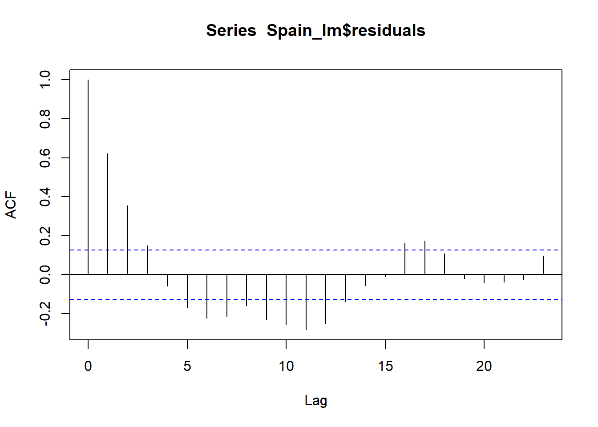
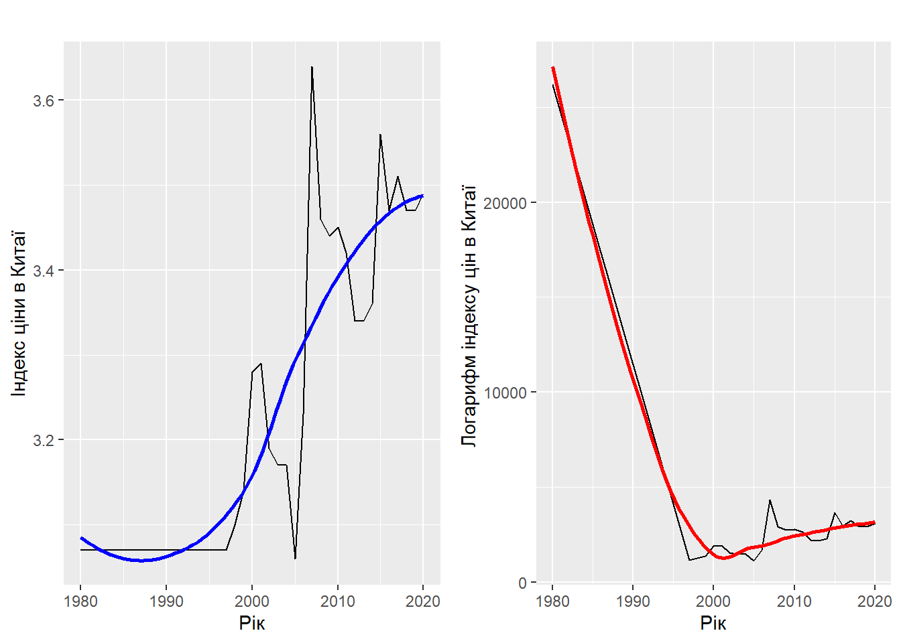
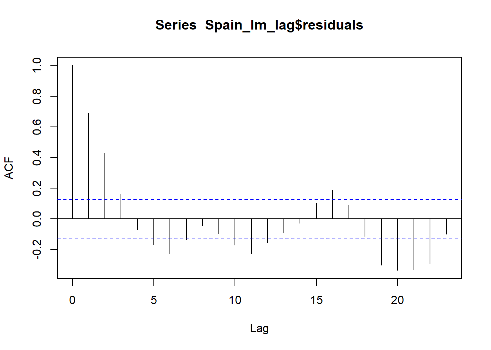

timePeriodModel <- excel_file
timePeriodModel[4:14] <- na_interpolation(timePeriodModel[4:14], option = "linear")
timePeriodModel_fit <- timePeriodModel %>%
mutate(year_num = year) %>%
filter(country %in% c("United States of America", "India", "China", "Spain", "United Kingdom"), year_num %in% c(2000:2020))
timePeriodModel_scale <- scale(timePeriodModel_fit[-1:-3], center=T, scale=T)Автоматичний пошук оптимального числа кластерів
Підготовка датасету та моделі. Кластерний аналіз
Обробка даних
Змінюємо тип даних з dbl на date Також заповнимо пусті клітинки з NA, використовуючи функцію na.interpolation
Побудова дендрограми
Кластерний аналіз - це метод машинного навчання, що використовується для розділення групи об’єктів на підгрупи або кластери на основі схожості між ними. Запускаємо алгоритм Уорда
timePeriodModel_info <- hclust(dist(timePeriodModel_scale, method = "euclidean"), method = "ward.D2")Перевірка оптимальної кількості кластерів за методами: ліктя, силуетним методом та gap_статистика
fviz_nbclust(timePeriodModel_scale, kmeans, method = "wss")fviz_nbclust(timePeriodModel_scale, kmeans, method = "silhouette")fviz_nbclust(timePeriodModel_scale, kmeans, method = "gap_stat")Побудова графіку
vision <- cutree(timePeriodModel_info, k=4)
plot(timePeriodModel_info)
rect.hclust(timePeriodModel_info, k=4, border = 2:4)
Реалізація K-середніх
kmeans.result <- kmeans(timePeriodModel_scale, 4, nstart = 1)
fviz_cluster(kmeans.result, data= timePeriodModel_scale, ellipse.type = "convex")+
theme_minimal()Результат
Поелементне входження в кластери
as.tibble(timePeriodModel_fit[kmeans.result$cluster==1,])Warning: `as.tibble()` was deprecated in tibble 2.0.0.
ℹ Please use `as_tibble()` instead.
ℹ The signature and semantics have changed, see `?as_tibble`.# A tibble: 38 × 15
stock.index country year index.price log_indexprice inflationrate oil.prices
<chr> <chr> <dbl> <dbl> <dbl> <dbl> <dbl>
1 NASDAQ United… 2000 3784. 3.58 0.03 28.4
2 NASDAQ United… 2001 2035 3.31 0.03 19.4
3 NASDAQ United… 2002 1540. 3.19 0.02 29.5
4 NASDAQ United… 2003 1647. 3.22 0.02 32.1
5 NASDAQ United… 2004 1987. 3.3 0.03 43.2
6 NASDAQ United… 2005 2099. 3.32 0.03 59.4
7 NASDAQ United… 2006 2263. 3.35 0.03 62.0
8 NASDAQ United… 2007 2578. 3.41 0.03 91.7
9 NASDAQ United… 2008 2162. 3.33 0.04 41.1
10 FTSE 100 United… 2000 6222. 3.79 0.01 28.4
# ℹ 28 more rows
# ℹ 8 more variables: exchange_rate <dbl>, gdppercent <dbl>,
# percapitaincome <dbl>, unemploymentrate <dbl>, manufacturingoutput <dbl>,
# tradebalance <dbl>, USTreasury <dbl>, year_num <dbl>as.tibble(timePeriodModel_fit[kmeans.result$cluster==2,])# A tibble: 16 × 15
stock.index country year index.price log_indexprice inflationrate oil.prices
<chr> <chr> <dbl> <dbl> <dbl> <dbl> <dbl>
1 SZCOMP China 2005 1145. 3.06 0.02 59.4
2 SZCOMP China 2006 1687. 3.23 0.02 62.0
3 SZCOMP China 2007 4329. 3.64 0.05 91.7
4 SZCOMP China 2008 2913. 3.46 0.06 41.1
5 SZCOMP China 2009 2737. 3.44 -0.01 74.5
6 SZCOMP China 2010 2796. 3.45 0.03 89.2
7 SZCOMP China 2011 2639. 3.42 0.06 98.6
8 SZCOMP China 2012 2211. 3.34 0.03 87.9
9 SZCOMP China 2013 2183. 3.34 0.03 97.6
10 SZCOMP China 2014 2280. 3.36 0.02 59.3
11 SZCOMP China 2015 3657. 3.56 0.01 37.2
12 SZCOMP China 2016 2978. 3.47 0.02 52.0
13 SZCOMP China 2017 3257. 3.51 0.02 57.9
14 SZCOMP China 2018 2920. 3.47 0.02 49.5
15 SZCOMP China 2019 2929. 3.47 0.03 59.9
16 SZCOMP China 2020 3110. 3.49 0.02 47.0
# ℹ 8 more variables: exchange_rate <dbl>, gdppercent <dbl>,
# percapitaincome <dbl>, unemploymentrate <dbl>, manufacturingoutput <dbl>,
# tradebalance <dbl>, USTreasury <dbl>, year_num <dbl>as.tibble(timePeriodModel_fit[kmeans.result$cluster==3,])# A tibble: 36 × 15
stock.index country year index.price log_indexprice inflationrate oil.prices
<chr> <chr> <dbl> <dbl> <dbl> <dbl> <dbl>
1 NASDAQ United… 2009 1845. 3.27 0.03 74.5
2 NASDAQ United… 2010 2350. 3.37 0.02 89.2
3 NASDAQ United… 2011 2677. 3.43 0.03 98.6
4 NASDAQ United… 2012 2966. 3.47 0.02 87.9
5 NASDAQ United… 2013 3541. 3.55 0.01 97.6
6 NASDAQ United… 2014 4375. 3.64 0.02 59.3
7 NASDAQ United… 2015 4946. 3.69 0.015 37.2
8 NASDAQ United… 2016 4988. 3.7 0.01 52.0
9 NASDAQ United… 2017 6235. 3.79 0.02 57.9
10 NASDAQ United… 2018 7426. 3.87 0.02 49.5
# ℹ 26 more rows
# ℹ 8 more variables: exchange_rate <dbl>, gdppercent <dbl>,
# percapitaincome <dbl>, unemploymentrate <dbl>, manufacturingoutput <dbl>,
# tradebalance <dbl>, USTreasury <dbl>, year_num <dbl>as.tibble(timePeriodModel_fit[kmeans.result$cluster==4,])# A tibble: 15 × 15
stock.index country year index.price log_indexprice inflationrate oil.prices
<chr> <chr> <dbl> <dbl> <dbl> <dbl> <dbl>
1 Nifty 50 India 2006 13787. 4.14 0.06 62.0
2 Nifty 50 India 2007 20287. 4.31 0.06 91.7
3 Nifty 50 India 2008 9647. 3.98 0.08 41.1
4 Nifty 50 India 2009 17465. 4.24 0.11 74.5
5 Nifty 50 India 2010 20509. 4.31 0.12 89.2
6 Nifty 50 India 2011 15455. 4.19 0.09 98.6
7 Nifty 50 India 2012 19427. 4.29 0.09 87.9
8 Nifty 50 India 2013 21171. 4.33 0.11 97.6
9 Nifty 50 India 2014 27499. 4.44 0.07 59.3
10 Nifty 50 India 2015 26118. 4.42 0.05 37.2
11 Nifty 50 India 2016 26626. 4.43 0.05 52.0
12 Nifty 50 India 2017 34057. 4.53 0.03 57.9
13 Nifty 50 India 2018 36068. 4.56 0.04 49.5
14 Nifty 50 India 2019 41254. 4.62 0.04 59.9
15 Nifty 50 India 2020 47751. 4.68 0.07 47.0
# ℹ 8 more variables: exchange_rate <dbl>, gdppercent <dbl>,
# percapitaincome <dbl>, unemploymentrate <dbl>, manufacturingoutput <dbl>,
# tradebalance <dbl>, USTreasury <dbl>, year_num <dbl>show(kmeans.result)K-means clustering with 4 clusters of sizes 38, 16, 36, 15
Cluster means:
index.price log_indexprice inflationrate oil.prices exchange_rate gdppercent
1 -0.3636429 -0.3887304 -0.1350669 -0.6906424 -0.1728289 0.09472757
2 -0.6557348 -0.9466970 -0.1336600 0.3644158 -0.2884309 1.13640036
3 -0.1544686 0.1329914 -0.5346400 0.4067970 -0.5535241 -0.78922505
4 1.9914039 1.6754144 1.7678763 0.3846044 2.0739508 0.44200323
percapitaincome unemploymentrate manufacturingoutput tradebalance USTreasury
1 0.01182305 -0.2314494 -0.3726439 -0.26056915 1.0174471
2 -0.92207006 -0.6185524 2.0865873 1.27406932 -0.3452053
3 0.88145668 0.6640633 -0.4021231 -0.32933969 -0.7531751
4 -1.16190636 -0.3476241 -0.3165666 0.09151648 -0.4016934
year_num
1 -1.0683158
2 0.4108907
3 0.7396033
4 0.4930688
Clustering vector:
[1] 1 1 1 1 1 1 1 1 1 3 3 3 3 3 3 3 3 3 3 3 3 1 1 1 1 1 1 1 1 1 3 3 3 3 3 3 3
[38] 3 3 3 3 3 1 1 1 1 1 1 4 4 4 4 4 4 4 4 4 4 4 4 4 4 4 1 1 1 1 1 2 2 2 2 2 2
[75] 2 2 2 2 2 2 2 2 2 2 1 1 1 1 1 1 1 1 1 3 3 3 3 3 3 3 3 3 3 3 3
Within cluster sum of squares by cluster:
[1] 198.18599 72.12339 202.90172 92.74978
(between_SS / total_SS = 54.7 %)
Available components:
[1] "cluster" "centers" "totss" "withinss" "tot.withinss"
[6] "betweenss" "size" "iter" "ifault" Статична економетрична модель часових рядів
Статична модель США
Перетворимо дані в часовий ряд за допомогою функції ts()
Spain_tpm <- timePeriodModel %>%
filter(country == "Spain")
ts_Spain <- ts(4:14, data = Spain_tpm,start=c(1980, 1), end= 2020, frequency=6) Модель для США:
Spain_lm <- lm(log_indexprice ~ percapitaincome + manufacturingoutput+ gdppercent, data = ts_Spain)
summary(Spain_lm)
Call:
lm(formula = log_indexprice ~ percapitaincome + manufacturingoutput +
gdppercent, data = ts_Spain)
Residuals:
Min 1Q Median 3Q Max
-0.19615 -0.07149 -0.01733 0.07353 0.32377
Coefficients:
Estimate Std. Error t value Pr(>|t|)
(Intercept) 3.610e+00 1.801e-02 200.443 < 2e-16 ***
percapitaincome 2.209e-05 6.106e-07 36.175 < 2e-16 ***
manufacturingoutput -1.591e-03 1.316e-04 -12.088 < 2e-16 ***
gdppercent 1.385e+00 2.585e-01 5.358 1.99e-07 ***
---
Signif. codes: 0 '***' 0.001 '**' 0.01 '*' 0.05 '.' 0.1 ' ' 1
Residual standard error: 0.1091 on 237 degrees of freedom
Multiple R-squared: 0.8525, Adjusted R-squared: 0.8506
F-statistic: 456.5 on 3 and 237 DF, p-value: < 2.2e-16abs(qt(0.1, 236))[1] 1.285149confint(Spain_lm) 2.5 % 97.5 %
(Intercept) 3.574266e+00 3.645222e+00
percapitaincome 2.088556e-05 2.329135e-05
manufacturingoutput -1.850506e-03 -1.331873e-03
gdppercent 8.760274e-01 1.894685e+00acf(Spain_lm$residuals, type = "correlation")
dwtest(Spain_lm)
Durbin-Watson test
data: Spain_lm
DW = 0.75282, p-value < 2.2e-16
alternative hypothesis: true autocorrelation is greater than 0Інтерпритація таких графіків доволі проста. На даному графіку спостерігається значення автокорильованих залишків, що взаємодіють між собою. Вісь х відповідає різним лагам, тобто числу псріодів, за якими розраховується коефіцієнт автокореляції, а вісь у показує кореляцію для кожного з відставань. Пунктирна блакитна лінія покаїзує рівень значущості.
Перша вертикальна лінія, де лаг— 0, показує кореляцію залишків із самим собою, тому завжди 100%-ва.При відсутності автокореляції наступні вертикальні смуги будуть швидко спадати
Також перевірити наявність цього явища можна за допомогою тесту Д-В
Тест Дарбіна-Вотсона - це статистичний тест на автокореляцію ряду залишків після регресійного аналізу. Він дозволяє виявити наявність автокореляції першого порядку в залишках регресійної моделі.
Як бачимо з результатів тесту у моделі присутня позитивна автокореляція
Створення часового ряду для візуалізації окремих показників: індекс ціни, ціну на нафту та виручку виробництв
Візуалізуємо деякі часові ряди
ts_Spain_logindex <- ts(Spain_tpm$log_indexprice, start = c(1980, 1), end = 2020)
Spain_plot_1 <- autoplot(ts_Spain_logindex, xlab = "Рік", ylab = "Індекс ціни в Іспанії") +
geom_smooth(se = FALSE, color = "blue")
ts_Spain_index <- ts(Spain_tpm$index.price, start = c(1980, 1), end = 2020)
Spain_plot_2 <- autoplot(ts_Spain_index, xlab = "Рік", ylab = "Логарифм індексу цін в Іспанії ") +
geom_smooth(se = FALSE, color = "red")
grid.arrange(Spain_plot_1, Spain_plot_2, ncol = 2)`geom_smooth()` using method = 'loess' and formula = 'y ~ x'
`geom_smooth()` using method = 'loess' and formula = 'y ~ x'ts_Spain_oil <- ts(Spain_tpm$gdppercent, start = c(1980, 1), end = 2020)
autoplot(ts_Spain_oil, xlab = "Рік", ylab = "ВВП в Іспанії") +
geom_smooth(se = FALSE, color = "darkgreen")`geom_smooth()` using method = 'loess' and formula = 'y ~ x'ts_Spain_manuf <- ts(Spain_tpm$manufacturingoutput, start = c(1980, 1), end = 2020)
autoplot(ts_Spain_manuf, xlab = "Рік", ylab = "Виручкка виробництв Іспанії") +
geom_smooth(se = FALSE, color = "cyan")`geom_smooth()` using method = 'loess' and formula = 'y ~ x'Статична модель Китаю
Перетворимо дані в часовий ряд за допомогою функції ts()
China_tpm <- timePeriodModel %>%
filter(country == "China")
ts_China <- ts(4:14, data = China_tpm,start=c(1980, 1), end= 2020, frequency=6)
China_lm <- lm(log_indexprice ~ inflationrate + oil.prices + tradebalance, data = ts_China)
summary(China_lm)
Call:
lm(formula = log_indexprice ~ inflationrate + oil.prices + tradebalance,
data = ts_China)
Residuals:
Min 1Q Median 3Q Max
-0.219343 -0.035731 -0.006369 0.028950 0.220891
Coefficients:
Estimate Std. Error t value Pr(>|t|)
(Intercept) 3.083e+00 1.235e-02 249.634 < 2e-16 ***
inflationrate -2.256e-01 9.800e-02 -2.302 0.02221 *
oil.prices 9.611e-04 3.007e-04 3.196 0.00158 **
tradebalance 1.157e-03 6.533e-05 17.706 < 2e-16 ***
---
Signif. codes: 0 '***' 0.001 '**' 0.01 '*' 0.05 '.' 0.1 ' ' 1
Residual standard error: 0.08005 on 237 degrees of freedom
Multiple R-squared: 0.8041, Adjusted R-squared: 0.8016
F-statistic: 324.3 on 3 and 237 DF, p-value: < 2.2e-16abs(qt(0.1, 235))[1] 1.285164confint(China_lm) 2.5 % 97.5 %
(Intercept) 3.0582670943 3.106920576
inflationrate -0.4186474587 -0.032518612
oil.prices 0.0003687789 0.001553509
tradebalance 0.0010279983 0.001285395acf(China_lm$residuals, type = "correlation")
dwtest(China_lm)
Durbin-Watson test
data: China_lm
DW = 1.1614, p-value = 1.531e-11
alternative hypothesis: true autocorrelation is greater than 0Візуалізуємо деякі часові ряди
ts_China_logindex <- ts(China_tpm$log_indexprice, start = c(1980, 1), end = 2020)
China_plot_1 <- autoplot(ts_China_logindex, xlab = "Рік", ylab = "Індекс ціни в Китаї") +
geom_smooth(se = FALSE, color = "blue")
ts_China_index <- ts(China_tpm$index.price, start = c(1980, 1), end = 2020)
China_plot_2 <- autoplot(ts_China_index, xlab = "Рік", ylab = "Логарифм індексу цін в Китаї ") +
geom_smooth(se = FALSE, color = "red")
grid.arrange(China_plot_1, China_plot_2, ncol = 2)`geom_smooth()` using method = 'loess' and formula = 'y ~ x'
`geom_smooth()` using method = 'loess' and formula = 'y ~ x'
ts_China_oil <- ts(China_tpm$oil.prices, start = c(1980, 1), end = 2020)
autoplot(ts_China_oil, xlab = "Рік", ylab = "Ціни на паливо в Китаї") +
geom_smooth(se = FALSE, color = "darkgreen")`geom_smooth()` using method = 'loess' and formula = 'y ~ x'
ts_China_trade <- ts(China_tpm$tradebalance, start = c(1980, 1), end = 2020)
autoplot(ts_China_trade, xlab = "Рік", ylab = "Баланс торгівлі в Китаї") +
geom_smooth(se = FALSE, color = "cyan")`geom_smooth()` using method = 'loess' and formula = 'y ~ x'
Динамічна модель
Динамічна модель є математичною моделлю, яка використовується для аналізу процесів, що змінюються в часі. Наприклад, часовий ряд, який відображає зміни якоїсь змінної відносно часу. У динамічній моделі вони описуються не тільки за допомогою попередніх значень, але й за допомогою змінних, які залежать від змінних попередніх періодів. Вони називаються лаговими змінними, а їх кількість - лагами. Таким чином, динамічна модель дозволяє врахувати залежність між змінними в часі, що дозволяє більш точно описати реальні процеси.
Модель з лаговими незалежними змінними
Створюємо модель, використовуючи у ній lag(), функцію для створення лагових змінних з кількістю лагів, вказаних у параметрі k
Модель Іспанії
Spain_lm_lag <- lm(log_indexprice ~ inflationrate + lag(inflationrate, 1) + lag(oil.prices, 1) + percapitaincome, data = ts_Spain)
summary(Spain_lm_lag)
Call:
lm(formula = log_indexprice ~ inflationrate + lag(inflationrate,
1) + lag(oil.prices, 1) + percapitaincome, data = ts_Spain)
Residuals:
Min 1Q Median 3Q Max
-0.17491 -0.08100 -0.01772 0.06080 0.32934
Coefficients:
Estimate Std. Error t value Pr(>|t|)
(Intercept) 3.751e+00 2.242e-02 167.288 < 2e-16 ***
inflationrate -1.717e+00 3.390e-01 -5.063 8.32e-07 ***
lag(inflationrate, 1) -1.123e+00 3.208e-01 -3.501 0.000555 ***
lag(oil.prices, 1) -1.911e-03 4.782e-04 -3.996 8.61e-05 ***
percapitaincome 1.502e-05 1.089e-06 13.795 < 2e-16 ***
---
Signif. codes: 0 '***' 0.001 '**' 0.01 '*' 0.05 '.' 0.1 ' ' 1
Residual standard error: 0.1134 on 235 degrees of freedom
(1 observation deleted due to missingness)
Multiple R-squared: 0.8408, Adjusted R-squared: 0.8381
F-statistic: 310.3 on 4 and 235 DF, p-value: < 2.2e-16acf(Spain_lm_lag$residuals, type = "correlation")
dwtest(Spain_lm_lag)
Durbin-Watson test
data: Spain_lm_lag
DW = 0.61553, p-value < 2.2e-16
alternative hypothesis: true autocorrelation is greater than 0Модель Китаю
China_lm_lag <- lm(log_indexprice ~ lag(inflationrate, 1) + lag(oil.prices, 1) + oil.prices + tradebalance + lag(tradebalance,2), data = ts_China)
summary(China_lm_lag)
Call:
lm(formula = log_indexprice ~ lag(inflationrate, 1) + lag(oil.prices,
1) + oil.prices + tradebalance + lag(tradebalance, 2), data = ts_China)
Residuals:
Min 1Q Median 3Q Max
-0.189732 -0.029850 -0.008396 0.012109 0.185089
Coefficients:
Estimate Std. Error t value Pr(>|t|)
(Intercept) 3.116e+00 1.177e-02 264.661 < 2e-16 ***
lag(inflationrate, 1) -3.985e-01 8.734e-02 -4.562 8.20e-06 ***
lag(oil.prices, 1) -1.434e-03 3.679e-04 -3.899 0.000126 ***
oil.prices 9.300e-04 3.301e-04 2.817 0.005261 **
tradebalance 1.151e-03 6.901e-05 16.674 < 2e-16 ***
lag(tradebalance, 2) 3.558e-04 5.800e-05 6.134 3.64e-09 ***
---
Signif. codes: 0 '***' 0.001 '**' 0.01 '*' 0.05 '.' 0.1 ' ' 1
Residual standard error: 0.07081 on 233 degrees of freedom
(2 observations deleted due to missingness)
Multiple R-squared: 0.8484, Adjusted R-squared: 0.8451
F-statistic: 260.8 on 5 and 233 DF, p-value: < 2.2e-16acf(China_lm_lag$residuals, type = "correlation")dwtest(China_lm_lag)
Durbin-Watson test
data: China_lm_lag
DW = 1.4023, p-value = 9.693e-07
alternative hypothesis: true autocorrelation is greater than 0Динамічна модель з авторегресійними розподіленими лагами
Динамічна модель з авторегресійними розподіленими лагами (Dynamic Autoregressive Distributed Lag model, DARDL) може бути застосована для аналізу залежності між змінними, враховуючи затримки часу
Іспанія
Spain_lm_L <- dynlm(log_indexprice ~ inflationrate + L(log_indexprice, 1) +inflationrate+ oil.prices + percapitaincome, data = ts_Spain)
summary(Spain_lm_L)
Time series regression with "ts" data:
Start = 1980(2), End = 2019(7)
Call:
dynlm(formula = log_indexprice ~ inflationrate + L(log_indexprice,
1) + inflationrate + oil.prices + percapitaincome, data = ts_Spain)
Residuals:
Min 1Q Median 3Q Max
-0.186479 -0.070876 -0.000918 0.081082 0.176710
Coefficients:
Estimate Std. Error t value Pr(>|t|)
(Intercept) 1.484e+00 1.584e-01 9.369 <2e-16 ***
inflationrate -2.294e+00 1.983e-01 -11.568 <2e-16 ***
L(log_indexprice, 1) 6.213e-01 4.392e-02 14.146 <2e-16 ***
oil.prices 9.221e-04 4.215e-04 2.188 0.0297 *
percapitaincome 6.975e-07 1.272e-06 0.549 0.5838
---
Signif. codes: 0 '***' 0.001 '**' 0.01 '*' 0.05 '.' 0.1 ' ' 1
Residual standard error: 0.08785 on 235 degrees of freedom
Multiple R-squared: 0.9045, Adjusted R-squared: 0.9029
F-statistic: 556.5 on 4 and 235 DF, p-value: < 2.2e-16acf(Spain_lm_L$residuals, type = "correlation")dwtest(Spain_lm_L)
Durbin-Watson test
data: Spain_lm_L
DW = 1.6315, p-value = 0.001202
alternative hypothesis: true autocorrelation is greater than 0Китай
China_lm_L <- dynlm(log_indexprice ~ L(log_indexprice, 1) +inflationrate+ oil.prices + tradebalance, data = ts_China)
summary(China_lm_L)
Time series regression with "ts" data:
Start = 1980(2), End = 2019(7)
Call:
dynlm(formula = log_indexprice ~ L(log_indexprice, 1) + inflationrate +
oil.prices + tradebalance, data = ts_China)
Residuals:
Min 1Q Median 3Q Max
-0.18740 -0.02256 -0.00239 0.01518 0.19711
Coefficients:
Estimate Std. Error t value Pr(>|t|)
(Intercept) 2.106e+00 1.250e-01 16.843 < 2e-16 ***
L(log_indexprice, 1) 3.139e-01 4.001e-02 7.847 1.49e-13 ***
inflationrate -1.221e-01 8.865e-02 -1.377 0.16982
oil.prices 7.067e-04 2.707e-04 2.611 0.00961 **
tradebalance 8.588e-04 6.963e-05 12.334 < 2e-16 ***
---
Signif. codes: 0 '***' 0.001 '**' 0.01 '*' 0.05 '.' 0.1 ' ' 1
Residual standard error: 0.07155 on 235 degrees of freedom
Multiple R-squared: 0.8444, Adjusted R-squared: 0.8417
F-statistic: 318.7 on 4 and 235 DF, p-value: < 2.2e-16acf(China_lm_L$residuals, type = "correlation")dwtest(China_lm_L)
Durbin-Watson test
data: China_lm_L
DW = 1.6903, p-value = 0.005493
alternative hypothesis: true autocorrelation is greater than 0Предиктор
China_train_size <- floor(0.8 * nrow(China_tpm))
China_train <- China_tpm[1:China_train_size, ]
China_test <- China_tpm[(China_train_size + 1):nrow(China_tpm), ]
# Додаємо лагові значення
China_train <- mutate(China_train,
inflation_lag1 = lag(China_train$inflationrate),
inflation_lag2 = lag(China_train$inflationrate, 2),
oilprice_lag1 = lag(China_train$oil.prices),
oilprice_lag2 = lag(China_train$oil.prices, 2))
China_train <- China_train[-c(1, 2), ]
# Побудова моделі
China_model <- lm(log_indexprice ~ inflationrate + inflation_lag1 + inflation_lag2 + oil.prices + oilprice_lag1 + oilprice_lag2, data = China_train)
# Перевірка на автокореляцію
dwtest(China_model)
Durbin-Watson test
data: China_model
DW = 1.103, p-value = 0.002392
alternative hypothesis: true autocorrelation is greater than 0acf(China_model$residuals, type = "correlation")# Перевірка ефективності моделі
summary(China_model)
Call:
lm(formula = log_indexprice ~ inflationrate + inflation_lag1 +
inflation_lag2 + oil.prices + oilprice_lag1 + oilprice_lag2,
data = China_train)
Residuals:
Min 1Q Median 3Q Max
-0.202283 -0.047438 0.008492 0.033699 0.210478
Coefficients:
Estimate Std. Error t value Pr(>|t|)
(Intercept) 2.994504 0.048403 61.865 <2e-16 ***
inflationrate -0.011986 0.412348 -0.029 0.977
inflation_lag1 -0.210295 0.534241 -0.394 0.697
inflation_lag2 -0.135580 0.416309 -0.326 0.748
oil.prices 0.002136 0.001342 1.592 0.125
oilprice_lag1 0.001812 0.001488 1.218 0.236
oilprice_lag2 0.002262 0.001622 1.394 0.177
---
Signif. codes: 0 '***' 0.001 '**' 0.01 '*' 0.05 '.' 0.1 ' ' 1
Residual standard error: 0.09169 on 23 degrees of freedom
Multiple R-squared: 0.7341, Adjusted R-squared: 0.6647
F-statistic: 10.58 on 6 and 23 DF, p-value: 1.169e-05China_test <- mutate(China_test,
inflation_lag1 = lag(China_test$inflationrate),
inflation_lag2 = lag(China_test$inflationrate, 2),
oilprice_lag1 = lag(China_test$oil.prices),
oilprice_lag2 = lag(China_test$oil.prices, 2))
China_pred <- predict(China_model, newdata = China_test)
China_pred <- na_interpolation(China_pred)
mse <- mean((China_pred - China_test$log_indexprice)^2)
mse[1] 0.02647475